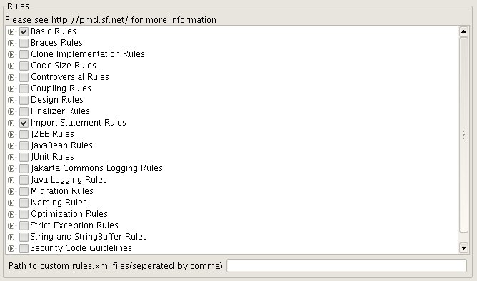
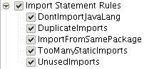
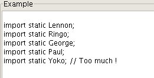
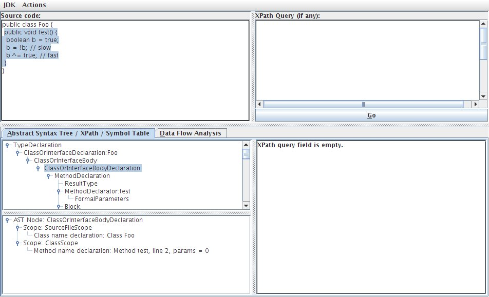

PMD-JEdit Plug-in User's Guide
|
PMD is a Java source code analyzer - it finds unused variables, questionable design decisions, empty catch blocks, and so forth. You can read much more about PMD here - http://pmd.sf.net/.
Actions
The various actions provided by this plugin are available on the 'PMD' menu item in the Plugins menu. This has several submenu options:
-
"Check current file" checks your currently displayed Java code
-
"Check all files in current directory" does just that
-
"Check directory recursively" does just that, too!
- Detect Duplicate Code
-
"In current file" checks your currently displayed Java code for duplicates
-
"In directory" same thing for the directory. On the resulting File Browser you can select "Recursive" to scan the selected directory recursively.
All those options put any errors into the ErrorList so you can then go jumping around your project fixing stuff.
There's a section in the Utilities->Global Options->Plugins configuration panel that lets you pick which rule sets you want to use.
Choose the rulesets you'd like to use:

The checkbox tree makes it easy to pick complete rulesets, just check on a ruleset to select all the rules in a ruleset. You can also add your own custom rulesets by entering the path to your rules.xml file. Probably most handy for day-to-day use are the Basic, Import, and Unused Code rulesets.
The first time you install the PMD plugin, a number of rules are already selected. The selected rules are those suggested by PMD best practices -- unused code, basic rules, a few design rules, a few controversial rules, the imports rules, and the string rules. These are a good starting place. Feel free to add or remove rules as fits your needs.

As you move your mouse over the various rules, the "Example" area shows the sort of code the particular rule checks for:

The configuration area also contains settings for a few other things:

These should be pretty much self-explanatory. One non-obvious thing is that if you check "Run PMD on Save", this will cause PMD to start automatically when jEdit starts. This is so PMD is ready to check your code the first time you save. This might cause jEdit to start just a little bit slower, but you probably won't notice that.
Note that the configuration panel also contains the minimum tile size for CPD to turn up a duplicate chunk. Take a look at the Release Notes and Changelogfor more details on new features in this release.
CPD, the Copy/Paste Detector
The PMD plugin provides access to the Copy/Paste Detector. This can help identify and eliminate duplicate code in a project. The heuristics used in the detection are a little "fuzzy" in that it is able to detect code that is very close to the same as code found elsewhere and can identify duplicate code regardless of the formatting of whitespace.
The CPD is very fast. It can also work on a variety of languages. Currently the fully supported languages are Java, JSP, PHP, C/C++, Fortran, Ruby, and Javascript. Additionally, CPD can work with just about every file mode supported by jEdit, although results may not be perfect as the modes not specifically supported use a generic tokenizer that may not suitable for a particular language.
A new feature for running CPD in a directory is the ability to include files as specified by a regular expression. This makes it easy to narrow your search in a project that may have a lot of files with the same name.
Another new feature for running CPD in a directory is the ability to exclude files. This makes it much easier to run CPD on a high level directory in a Maven project so the files in the "target" directories can be skipped. Enter a regular expression in the "Exclusions" field in the directory chooser dialog. For Maven projects, enter .*?/target/.* to exclude all the "target" directories. The "Exclusions" regular expression works on the full path of a file, so this regex might not work in all cases (like maybe code for target.com?)
You can set both an inclusion regular expression and an exclusion regular expression. Files are first checked for inclusion then exclusion. This means the Maven example above is still valid.
Custom Rules
Starting 2.1, you can now add Custom Defined Rulesets with PMD plugin. Previously, if you want to use your own rulesets with the PMD plugin, you had to unjar the pmd.jar file & add your ruleset defination in the jar file & re-jar it & use it. But this procedure had to be repeated whenever a new PMD is out. But not anymore. Now you can simply point PMD plugin to your custom rulesets.xml file & drop your custom ruleset jars in either of jEdit jars directory(either system or user). Once this is done, you will be able to manipulate your Custom Rulesets just the way like the built-in ones.
As of version 3.0, the PMD Plugin provides access to the PMD Rule Designer, which makes it easier to create your own custom rules. Start the Designer by going to Plugins -> PMD Plugin -> Run Rule Designer. The instructions for the Designer can be found on the PMD website at http://pmd.sourceforge.net/xpathruletutorial.html.
PMD Rule Designer:

PMD jEdit 2.2 adds updates PMD plugin to the latest and the greatest PMD release, updates to Dynamic class loading feature of jEdit and adds PMD to jEdit's File System Browser for easy access.
PMD jEdit plugin 2.5 updates to the latest PMD release, remove redundant menu options and makes usage of the plugin more compact. Look at the details Release notes and Changelog below.
Release Notes & Changelog
5.0.1 (Dale Anson, December 2012)
-
Updated to use the latest code from PMD 5.0.1, which includes rules for checking Java, JSP, JSF, Ecmascript, and XML.
-
Adjusted options:
- Removed language choices since they are no longer used. The plugin will use the language of the buffer being checked.
- Added option to clear ErrorList on save. This is only useful when checking a single buffer, and is most useful when you've done a check of a directory and are fixing and saving things file by file.
- Removed CPD settings since they are set in the popup dialog.
-
Adjusted rules by removing the jsp tab. All rules for all supported languages are in the same rules checkbox tree.
3.4 (Dale Anson, June 2011)
-
Updated to use latest code from PMD 4.2.x branch, which includes a significant update to CPD.
-
Added ability to use an "exclusions" regular expression in CPD.
-
Added ability to save the output from a CPD run as a text file.
3.3 (Dale Anson, June 2010)
-
Added ability to export the current ruleset.
-
Added a new option pane to allow the user to select custom rulesets.
-
Now using layout manager from Common Controls.
-
Now checking buffer mode rather than filename extension to know how to parse the file.
-
Improved display of rule priority and examples.
-
Added ability to use the JSP rules so PMD can be used on JSP files.
3.2 (Dale Anson, Dec 2009)
-
Upgraded to PMD 4.2.6.
-
Adjusted CPD to work with just about all file modes supported by jEdit.
-
Moved all hard-coded strings to the property file so they can be localized.
3.1 (Dale Anson)
-
Display rule description along with example.
3.0 (Dale Anson)
-
Split the option pane into smaller panes so they are easier to use.
-
Selected some default rules for first-time users. This makes it much easier for new users to get started.
-
Changed plugin to start on jEdit startup and to check on file save. This makes it easier for PMD to be useful right away.
-
Upgraded to PMD 4.2.5, which includes some new rulesets, including one specifically for Android programming.
-
Mouse-over on ruleset names now gives description of the ruleset in the example box. This makes it easier to understand what the group of rules is about.
-
Added menu item to access PMD Rule Designer.
2.9 (2008-04-04, Dale Anson)
-
Fixed a bug in 'check all files in a directory' where the plugin always defaulted to Java 1.4 rather than the Java version selected in the option pane.
-
Revised the option pane to use a checkbox tree rather than a list of checkboxes. The list was long (just under 200 rules), and didn't have any grouping by ruleset. The checkbox tree groups the rules by ruleset, and clicking the checkbox on the ruleset checks all rules contained by that ruleset. This is way easier than looking through the long list to pick out the rules.
-
Revised the option pane so the layout is more compact and fits on the screen better.
2.7 (2007-11-20)
-
Updated to PMD 4.1
-
New option: choose version of Java (1.4, 1.5, 1.6)
-
Fixed Bug [1501422] PMD Plugin: example box is not updated when new items hover filed in jEdit Plugins Bug tracker.
-
Changed the way Rules are managed and given for execution to PMD due to addition of new languages to PMD and was giving error due to language mismatch.
-
Added new option "Print Rulename in ErrorList" which is helpful to trace down what rule is generating this error.
2.6
-
Updated to PMD 3.4
-
Updated to jEdit 4.3pre3
-
Added "Ignore Literals & identifiers" option for CPD.
2.5
-
Updated to PMD 1.9
-
Removed Recursive Directory options and integrated them into FileChooser itself.
-
Complete redesign of the way PMD Rules and Copy/Paste Detector are used.
-
Fixed improper highlighting of Rule Violations. Because of this bug, any open file in jEdit was showing errors of other files too.
-
Lots of code cleanup and optimizations.
2.4
-
Optimized usage of ErrorSource for faster Error Highlighting.
-
Updated to PMD 1.6
-
Fixed Run on save running when the buffer is non Java also.
-
Added option to export PMD results to a file in various formats such as HTML, XML, Text, CSV etc.
-
Added a new feature to show Progressbar when working on Large file sets.
-
Made Progress bar color user-configurable.
-
Improvement in Copy/Paste Detector.
2.3
-
Updated to PMD 1.3
2.2
-
Updated to PMD 1.2.1
-
Updated to jEdit 4.2 API changes
-
Added PMD in jEdit's File System Browser Plugins Menu.
2.1
-
Added "clear ErrorList" option.
-
Added "check all open buffers" option.
-
Added support to define Custom RuleSets thereby facilitating integration of Custom Rulesets with built-in rulesets & their independent development.
-
Added C/C++, PHP support to Copy/Paste Detector. Now you can find out duplicate code in your C/C++ & PHP code besides the usual Java code.
2.0
-
Integrated Copy/Paste Detector(CPD) in jEdit.
-
Updated to use pmd-1.05
Old change log
Old change log
License
The PMD-JEdit plugin is free software released under the Apache license.